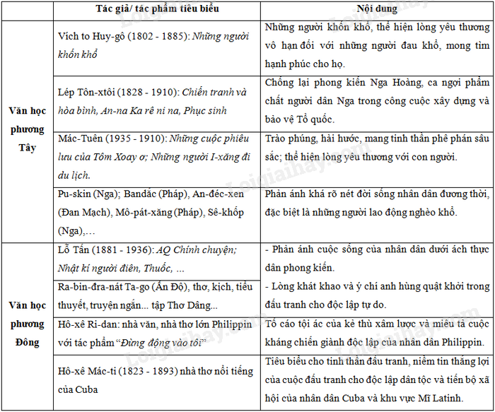

B. TỰ LUẬN
Câu 1 Trình bày nguyên nhân, diễn biến, kết quả và ý nghĩa của Cách mạng Tân Hợi ở Trung Quốc (1911). Tại sao nói: “Cách mạng Tân Hợi là một cuộc cách mạng tư sản không triệt để”?
*, Nguyên nhân, diễn biến, kết quả, ý nghĩa của cách mạng Tân Hợi (1911)
- Nguyên nhân:
+ Nguyên nhân sâu sa: mâu thuẫn giữa nhân dân Trung Quốc với đế quốc xâm lược và phong kiến đầu hàng ngày càng sâu sắc.
+ Nguyên nhân trực tiếp: chính quyền Mãn Thanh ra sắc lệnh “Quốc hữu hóa đường sắt” (tháng 5/1911), thực chất là trao quyền kinh doanh đường sắt cho các nước đế quốc, bán rẻ quyền lợi dân tộc.
- Diễn biến chính:
+ Ngày 10/10/1911, Trung Quốc Đồng minh hội phát động khởi nghĩa ở Vũ Xương. Cuộc khởi nghĩa thắng lợi rồi nhanh chóng lan rộng ra các tỉnh miền Nam và miền Trung.
+ Ngày 29/12/1911, Quốc dân đại hội họp ở Nam Kinh, tuyên bố thành lập Trung Hoa Dân quốc, bầu Tôn Trung Sơn làm tổng thống, đứng đầu chính phủ lâm thời.
+ Ngày 6/3/1912, Viên Thế Khải nhậm chức Đại Tổng thống của Trung Hoa Dân quốc => cách mạng chấm dứt, các thế lực phong kiến quân phiệt lên nắm chính quyền.
- Kết quả - Ý nghĩa:
+ Lật đổ chính quyền Mãn Thanh, chấm dứt chế độ quân chủ chuyên chế ở Trung Quốc.
+ Mở đường cho sự phát triển của chủ nghĩa tư bản ở Trung Quốc.
+ Ảnh hưởng đến phong trào giải phóng dân tộc ở một số nước châu Á (trong đó có Việt Nam).
*, Cách mạng Tân Hợi là một cuộc cách mạng tư sản không triệt để
- Thắng lợi của Cách mạng Tân Hợi đã tạo điều kiện thuận lợi cho sự phát triển của chủ nghĩa tư bản ở Trung Quốc.
- Tuy nhiên, cách mạng Tân Hợi còn tồn tại nhiều hạn chế:
+ Không thủ tiêu triệt để thế lực phong kiến.
+ Không đụng chạm đến các nước đế quốc xâm lược.
+ Không giải quyết vấn đề ruộng đất cho nông dân.
=> Cách mạng Tân Hợi (1911) là cuộc cách mạng tư sản không triệt để.
Câu 2 Trình bày những nguyên nhân dẫn đến Chiến tranh thế giới thứ nhất (1914 – 1918). Có ý kiến cho rằng “Chiến tranh thế giới thứ nhất mang tính chất của một cuộc chiến tranh đế quốc phi nghĩa”, phát biểu ý kiến của em về nhận định trên.
* Nguyên nhân sâu xa
- Sự phát triển không đều của chủ nghĩa tư bản vào cuối thế kỉ XIX – đầu thế kỉ XX đã làm thay đổi sâu sắc tương quan lực lượng giữa các nước.
- Mâu thuẫn giữa các nước Đế quốc “trẻ” (Đức, Áo-Hung..) và các nước đế quốc “già” (Anh, Pháp) về vấn đề thị trường và thuộc địa ngày càng gay gắt.
- Đầu thế kỉ XX, ở châu Âu đã hình thành hai khối quân sự đối đầu nhau: khối Liên minh (Đức, Áo – Hung, I-ta-li-a) và khối Hiệp ước (Anh, Pháp, Nga). Hai khối này đều ráo riết chạy đua vũ trang và tích cực chuẩn bị chiến tranh, mong muốn địch thủ của mình để chia lại thuộc địa, làm bá chủ thế giới.
* Duyên cớ
- 28/6/1914, Thái tử Áo-Hung bị ám sát tại Xéc-bi (nước được phe Hiệp ước ủng hộ). => Giới quân phiệt Đức, Áo-Hung chớp lấy cơ hội đó để gây chiến tranh.
b. Phát biểu ý kiến về nhận định “Chiến tranh thế giới thứ nhất mang tính chất của một cuộc chiến tranh đế quốc phi nghĩa”
* Phát biểu ý kiến:
“Chiến tranh thế giới thứ nhất mang tính chất của một cuộc chiến tranh đế quốc phi nghĩa” là nhận định chính xác.
* Chứng minh nhận định
- Mục đích tiến hành chiến tranh của các nước đế quốc:
+ Giải quyết mâu thuẫn về thị trường, thuộc địa.
+ Lợi dụng chiến tranh để đàn áp phong trào cách mạng của giai cấp vô sản trong nước và phong trào giải phóng dân tộc đang phát triển mạnh mẽ ở các nước thuộc địa.
- Chiến tranh thế giới thứ nhất đã để lại những hậu quả nặng nề cho nhân loại. Quần chúng lao động ở chính quốc cũng như nhân dân các nước thuộc địa là những người phải gánh chịu mọi tai họa do cuộc chiến tranh gây ra.
- Chiến tranh thế giới thứ nhất kết thúc đã mang lại nhiều nguồn lợi cho các nước đế quốc thắng trận (qua hai hội nghị hòa bình ở Véc-xai và Oa-sinh-tơn), nhân dân lao động ở các nước hoàn toàn không được hưởng thành quả từ chiến thắng.
Câu 3: Trình bày những nguyên nhân dẫn đến Chiến tranh thế giới thứ nhất (1914 – 1918). Từ những hậu quả nặng nề mà Chiến tranh thế giới thứ nhất (1914 – 1918) để lại cho nhân loại, em hãy liên hệ trách nhiệm của học sinh trong việc chống chiến tranh, bảo vệ hòa bình thế giới.
1. Nguyên nhân sâu xa:
- Vào cuối thế kỉ XIX - đầu thế kỉ XX, sự phát triển không đồng đều giữa các nước tư bản về kinh tế và chính trị đã làm thay đổi sâu sắc so sánh lực lượng giữa các nước đế quốc. Mâu thuẫn về vấn đề thuộc địa đã dẫn tới các cuộc chiến tranh đế quốc đầu tiên như:
+ Chiến tranh Mĩ - Tây Ban Nha (1898).
+ Chiến tranh Anh - Bô-ơ (1899 - 1902).
+ Chiến tranh Nga - Nhật (1904 - 1905).
- Để chuẩn bị cho cuộc chiến tranh nhằm tranh giành thị trường, thuộc địa, các nước đế quốc đã thành lập hai khối quân sự đối lập:
+ Khối Liên minh gồm Đức - Áo - Hung (1882).
+ Khối Hiệp ước của Anh - Pháp - Nga (1907).
- Cả hai khối đều tích cực chạy đua vũ trang nhằm tranh nhau làm bá chủ thế giới.
=> Như vậy, do sự phát triển không đồng đều giữa các nước đế quốc vào cuối thế kỉ XIX - đầu thế kỉ XX đã dẫn tới mâu thuẫn về vấn đề thuộc địa là nguyên nhân sâu xa của cuộc Chiến tranh thế giới thứ nhất.
2. Nguyên nhân trực tiếp
- Ngày 29-6-1914, Thái tử Áo - Hung bị một phần tử khủng bố ở Xéc-bi ám sát.
=> Giới quân phiệt Đức, Áo - Hung chớp lấy cơ hội này để gây chiến tranh.
*Từ những hậu quả của Chiến tranh thế giới thứ nhất (1914 – 1918), liên hệ trách nhiệm của học sinh trong việc chống chiến tranh, bảo vệ hòa bình thế giới.
* Hậu quả của Chiến tranh thế giới thứ nhất (1914 – 1918)
- Chiến tranh thế giới thứ nhất (1914 – 1918) đã để lại nhiều hậu quả nặng nề:
+ Khoảng 1.5 tỷ người bị lôi cuốn vào vòng khói lửa, 10 triệu người bị chết, hơn 20 triệu người bị thương.
+ Nhiều thành phố, làng mạc, nhà máy, đường xá, cầu cống... bị phá hủy.
+ Chi phí cho chiến tranh của các nước đế quốc tham chiến lên tới 85 tỉ USD.
* Liên hệ trách nhiệm của học sinh trong việc chống chiến tranh, bảo vệ hòa bình
- Học tập, tu dưỡng đạo đức để trở thành những người công dân tốt, góp phần xây dựng đất nước giàu mạnh, bảo vệ độc lập, hòa bình của đất nước,…
- Tích cực tham gia những phong trào chung nhằm tuyên truyền ý thức bảo vệ hòa bình, chống chiến tranh trong phạm vi nhà trường, địa phương, cũng như cả nước và quốc tế,…
Câu 4: Trình bày nguyên nhân bùng nổ chiến tranh thế giới thứ nhất (1914-1918). Vì sao nói đây là cuộc chiến tranh đế quốc phi nghĩa?
Đây là cuộc chiến tranh phi nghĩ do:
o Vì quyền lợi của mình mà giai cấp tư sản đã đẩy nhân dân các nước vào cuộc chiến tranh tàn khốc đau thương.
o Chỉ đem lại nguồn lợi cho giai cấp tư sản cầm quyền.
o Cuộc chiến tranh này do giới cầm quyền ở các nước đế quốc gây ra nhằm thanh toán lẫn nhau để chia lại thuộc địa, làm bá chủ thế giới nhưng nhân dân lao động lại là người phải gánh chịu mọi hy sinh mất mát về người & của.
Câu 5: Nhận xét về phong trào đáu tranh của nhân dân TQ từ giữa thế kỉ XIX đến đầu thế kỉ XX
- Quy mô: diễn ra liên tục, rộng lớn, quyết liệt, sôi nổi và đạt được những kết quả nhất định.
- Lãnh đạo: sĩ phu yêu nước tiến bộ, giai cấp tư sản.
- Lực lượng tham gia: chủ yếu là nông dân.
- Kết quả: đều thất bại.
- Tính chất: mang tính dân tộc sâu sắc.
- Ý nghĩa: Cổ vũ phong trào đấu tranh của nhân dân Trung Quốc và các nước thuộc địa khu vực Châu Á. Thể hiện tinh thần yêu nước và đấu tranh kiên cường của nhân dân Trung Quốc và để lại những bài học kinh nghiệm cho cách mạng.
Câu 6: Lập bảng diễn biến của chiến tranh ở giai đoạn thứ nhất (1914-1916) và giai đoạn thứ 2 (1917-1918)
- Giai đoạn thứ nhất (1914 - 1916)
|
Thời gian |
Chiến sự |
Kết quả |
|
1914 |
Ở phía Tây : ngay đêm 3.8 Đức tràn vào Bỉ, đánh sang Pháp. Cùng lúc ở phía Đông; Nga tấn công Đông Phổ. |
Đức chiếm được Bỉ, một phần nước Pháp uy hiếp thủ đô Pa-ri. Cứu nguy cho Pa-ri. |
|
1915 |
Đức, Áo - Hung dồn toàn lực tấn công Nga. |
Hai bên ở vào thế cầm cự trên một Mặt trận dài 1200 km. |
|
1916 |
Đức chuyển mục tiêu về phía Tây tấn công pháo đài Véc-doong. |
Đức không hạ được Véc-đoong, 2 bên thiệt hại nặng. |
Những năm đầu Đức, Áo - Hung giữ thế chủ động tấn công. Từ cuối 1916 trở đi. Đức, Áo - Hung chuyển sang thế phòng ngự ở cả hai mặt trận Đông Âu, Tây Âu.
- Giai đoạn thứ 2 (1917 - 1918)
|
Thời gian |
Chiến sự |
Kết quả |
|
2/1917 |
Cách mạng dân chủ tư sản ở Nga thành công. |
Chính phủ tư sản lâm thời ở Nga vẫn tiếp tục chiến tranh. |
|
2/4/1917 |
Mĩ tuyên chiến với Đức, tham gia vào chiến tranh cùng phe Hiệp ước. |
Có lợi hơn cho phe Hiệp ước. |
|
Trong năm 1917 chiến sự diễn ra trên cả 2 Mặt trận Đông và Tây Âu. |
Hai bên ở vào thế cầm cự. |
|
|
11/1917 |
Cách mạng tháng 10 Nga thành công |
Chính phủ Xô viết thành lập |
|
3/3/1918 |
Chính phủ Xô viết ký với Đức Hiệp ước Bơ-rét Li-tốp |
Nga rút khỏi chiến tranh |
|
Đầu 1918 |
Đức tiếp tục tấn công Pháp |
Một lần nữa Pa-ri bị uy hiếp |
|
7/1918 |
Mĩ đổ bộ vào châu Âu, chớp thời cơ Anh - Pháp phản công. |
Đồng minh của Đức đầu hàng: Bungari 29/9, Thổ Nhĩ Kỳ 30/10, Áo - Hung 2/11 |
|
9/11/1918 |
Cách mạng Đức bùng nổ |
Nền quân chủ bị lật đổ |
|
1/11/1918 |
Chính phủ Đức đầu hàng |
Chiến tranh kết thúc |
Câu 7: Những thành tựu của văn học nghệ thuật từ đầu thế kỉ XIX đến đầu thế kỉ XX.
a) Điều kiện lịch sử
- Chủ nghĩa tư bản được xác lập trên phạm vi toàn thế giới và bước sang giai đoạn chủ nghĩa đế quốc.
- Giai cấp tư sản nắm quyền thống trị, mở rộng và xâm lược thuộc địa thì đời sống nhân dân lao động bị áp bức ngày càng khốn khổ.
b) Thành tựu tiêu biểu về văn học, nghệ thuật đầu thế kỉ XIX đến đầu thế kỉ XX
* Văn học:

* Nghệ thuật:
- Kiến trúc: Cung điện Véc xai được hoàn thành vào năm 1708; Bảo tàng Anh; Viện bảo tàng Ec-mi-ta-giơ; Bảo tàng Lu-vrơ (Pa-ri-Pháp), là bảo tàng bằng hiện vật lớn nhất thế giới.
- Hội hoạ: họa sĩ Van Gốc (Hà Lan) với tác phẩm Hoa hướng dương, Phu-gita (Nhật Bản), Pi-cát-xô (Tây Ban Nha), Lê-vi-tan (Nga), …
- Âm nhạc: Trai-cốp-ki với Hồ thiên nga, Người đẹp ngủ trong rừng, ….
=> Tác dụng: phản ánh hiện thực xã hội, mong ước xây dựng một xã hội mới tốt đẹp hơn.